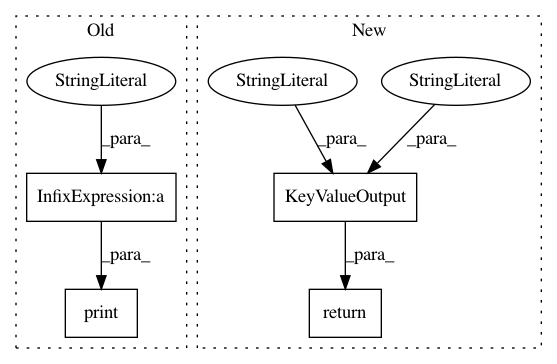

b10c11e8f77cafaef0e4cb12406c5c7d9adf2c2d,w3af/core/controllers/profiling/scan_log_analysis/data/file_sizes.py,,show_file_sizes,#,7
Before Change
stat_info = os.stat(scan_log_filename)
print("The debug log file size is %s bytes" % stat_info.st_size)
latest_xml_size_line = None
for line in scan:
After Change
data = {"debug_log": stat_info.st_size,
"xml_output": latest_xml_size}
return KeyValueOutput("file_sizes", "output file sizes (bytes)", data)
In pattern: SUPERPATTERN
Frequency: 3
Non-data size: 4
Instances
Project Name: andresriancho/w3af
Commit Name: b10c11e8f77cafaef0e4cb12406c5c7d9adf2c2d
Time: 2018-10-09
Author: andres.riancho@gmail.com
File Name: w3af/core/controllers/profiling/scan_log_analysis/data/file_sizes.py
Class Name:
Method Name: show_file_sizes
Project Name: andresriancho/w3af
Commit Name: b10c11e8f77cafaef0e4cb12406c5c7d9adf2c2d
Time: 2018-10-09
Author: andres.riancho@gmail.com
File Name: w3af/core/controllers/profiling/scan_log_analysis/data/consumer_join_times.py
Class Name:
Method Name: show_consumer_join_times
Project Name: andresriancho/w3af
Commit Name: b10c11e8f77cafaef0e4cb12406c5c7d9adf2c2d
Time: 2018-10-09
Author: andres.riancho@gmail.com
File Name: w3af/core/controllers/profiling/scan_log_analysis/data/errors.py
Class Name:
Method Name: show_errors